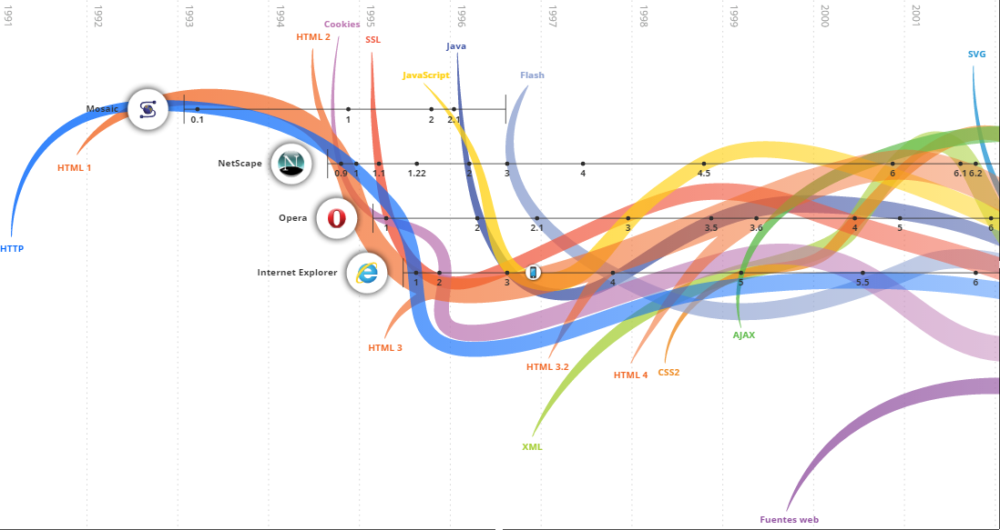

El lenguaje llamado HTML indica al navegador donde colocar cada texto, cada imagen o cada video y la forma que tendrán estos al ser colocados en la página.
2
Applets de Java
Se trata de pequeños programas hechos en Java, que se transfieren con las páginas web y que el navegador ejecuta en el espacio de la página.
3
JavaScript
Su uso se basa fundamentalmente en la creación de efectos especiales en las páginas y la definición de interactividades con el usuario
4
Visual Basic Script
Es un lenguaje de programación de scripts del lado del cliente, pero sólo compatible con Internet Explorer. Funciona para construir efectos especiales en páginas web
5
PHP
Es un lenguaje de programación del lado del servidor gratuito e independiente de plataforma, rápido, con una gran librería de funciones y mucha documentación.
6
ASP.net
ASP (Active Server Pages) es la tecnología desarrollada por Microsoft para la creación de páginas dinámicas del servidor. ASP se escribe en la misma página web, utilizando el lenguaje Visual Basic Script o Jscript (Javascript de Microsoft).

Tabla de investigacion2.
Lenguaje
Definicion:
1
HTML
El lenguaje llamado HTML indica al navegador donde colocar cada texto, cada imagen o cada video y la forma que tendrán estos al ser colocados en la página.
2
Applets de Java
Se trata de pequeños programas hechos en Java, que se transfieren con las páginas web y que el navegador ejecuta en el espacio de la página.
3
JavaScript
Su uso se basa fundamentalmente en la creación de efectos especiales en las páginas y la definición de interactividades con el usuario
4
Visual Basic Script
Es un lenguaje de programación de scripts del lado del cliente, pero sólo compatible con Internet Explorer. Funciona para construir efectos especiales en páginas web
5
PHP
Es un lenguaje de programación del lado del servidor gratuito e independiente de plataforma, rápido, con una gran librería de funciones y mucha documentación.
6
ASP.net
ASP (Active Server Pages) es la tecnología desarrollada por Microsoft para la creación de páginas dinámicas del servidor. ASP se escribe en la misma página web, utilizando el lenguaje Visual Basic Script o Jscript (Javascript de Microsoft).